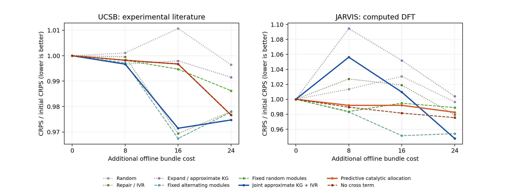

本轮实际构建UTC 2026-11-05T11:46:28.286299+00:00。新方向独立于原MLST论文；本报告只读取已冻结证据，不拟合或重评分材料。
原完整科学资源610MB、后续准备增量350KB、17页主文、27页SI、64参考以及完整Git历史已封存至 MLST独立存档入口。 完整Git bundle可离线新克隆，18个载荷全部重新核SHA；新克隆712清单／16冻结绑定通过。模型、稿件、旧开发及外部负结果保持其原版本。
远端archive/mlst-final-freeze-2026-11-05 已核对为05a40915be149857b2bb9cf65144d53fa9b24f37。上轮网络失败记录仍保留，本轮服务恢复后push及ls-remote成功。 新方向使用独立研究分支；不把本轮结果回填进原MLST主张。原独立新批次、真实材料校准、实际实验节约及作者权利事项仍按原记录保留。
暂定下一可行届NeurIPS主会，ICML2027为备选。若最终贡献成为普适的预算决策方法，两者顺序应依结果调整；若NeurIPS2027继续设置Use-Inspired贡献类型，再按正式CFP选择。ICLR2027投稿截止已经过去。未核验到的未来截止日不填写，也不估算录用概率。
目前最直接的先例是MADE（ICML2026）：已有受限oracle预算下的生成、筛选、规划与反馈闭环。 自纠正生成循环（ICML2024）已有外部纠正器； Hypervolume KG（ICML2023）已有部分信息和成本联合决策。 GRAPE、主动特征获取及GFlowNet也覆盖补齐、逐步查询与生成—oracle反馈的主要组成。创新可以来自问题、适配、控制、理论或基准增量，不要求所有组件首创；但循环本身、增加角色或Eigen命名不足以形成新方法。
实际阅读深度、版本、许可与检索范围分别在近邻账本、 会议范围与接受工作账本。本轮是选节阅读，没有声称完成各100篇全文学习。
用户已确认教授指的是Manfred Eigen。超循环启发的是不同功能之间的相互促进及错误反馈风险。 经典归一化复制动力学为：
dx_i/dt = x_i[a_i + Σ_j c_ij x_j − Φ(x)], Σ_i x_i=1
资源份额不等于真实证据总量。修复后的数据只有带来新的有效测量、计算或独立验证，才增加相应证据；自己的预测经过几个代理传递，仍是预测。Eigen获1967年化学奖的工作是快速反应研究，超循环是后来与Schuster的理论，不写成“超循环获得诺奖”。
“蜘蛛补网后扩网”在首阶段被具体化为两类动作：R修复已部分观察的行，E开启未观察的候选行。E之后该行可进入R。首轮是固定公共候选池的逐步揭示，不是开放世界新化学结构生成；agent是透明决策程序，没有调用LLM或进行新湿实验／DFT。
| 来源 | 原表／可评估子集 | 本轮用途与限制 |
|---|---|---|
| UCSB热电，实验文献汇编 | 1093行；三原始响应、温度和来源完整703行／62保守组；本轮40组78行 | 目标rho、S、kappa。温度／成分是输入；sigma、PF、zT整体隔离以免代数泄漏。检索低kappa，不称完整zT最优化。 |
| JARVIS，计算DFT表 | 25923行；三目标完整11020行／8842保守组；本轮40组47行 | 目标e_form、gap opt、source bulk。原生负bulk保留。检索高bulk，不称新合成材料发现。结构未编码，不能当性质回归SOTA。 |
每表的40组按元数据hash分成8warm／8repair／16frontier／8test，每组最多2行；全源身份连接先于完整案例选择。原生缺失没有真值，本轮在完整案例上施加结构化遮挡，存在选择偏差。剩余22／8802组是未选元数据组，不自动认证为新的独立湿实验批次。
所有策略共享固定warm Gaussian ICM、描述、初始观察和动作包。A={p0,p1}、B={p2}每包成本1；每轨迹再查询24包。UCSB共同初始47包、JARVIS29包。新增响应格数为24–37，故只能称等bundle预算；该计费不是实际仪器或DFT耗时。重复状态、同源派生量及逻辑别名不增加独立材料数。
八策略为随机、补齐IVR、扩展近似KG、固定交替、固定随机模块、联合近似KG＋IVR、预测催化调度和去交叉项消融。4种确定性策略每表只执行一次；4种随机策略各4轨迹。总计40次实际轨迹、64个含别名的逻辑引用、160份预测；四个随机种子不是四套独立材料。
先在实际UTC登记协议及输入／源码hash，40条轨迹全部冻结后才揭示测试值。主终点为每表8个保守测试组等权的标准化Gaussian CRPS。可见测试描述用于转导式IVR与共同缩放，测试响应封存；因此不能声称严格未知描述的归纳泛化或同权重零样本跨域迁移。
| 数据 | 策略 | 实际轨迹 | 24包CRPS↓ | 相对联合对照 | 已查top10%组命中 |
|---|---|---|---|---|---|
| 实验热电 | random | 4 | 4.07551768 | +2.230% | 0.50 |
| 实验热电 | repair_only_IVR | 1 | 4.00021036 | +0.341% | 0.00 |
| 实验热电 | expansion_only_KG | 1 | 4.05535879 | +1.724% | 2.00 |
| 实验热电 | fixed_cycle | 1 | 3.99945265 | +0.322% | 2.00 |
| 实验热电 | fixed_random_modules | 4 | 4.03376822 | +1.183% | 1.50 |
| 实验热电 | joint_lookahead_all | 1 | 3.98661707 | +0.000% | 2.00 |
| 实验热电 | hypercycle_predictive | 4 | 3.99456652 | +0.199% | 1.25 |
| 实验热电 | hypercycle_no_cross | 4 | 3.99456652 | +0.199% | 1.25 |
| 计算晶体 | random | 4 | 0.57369604 | +5.160% | 0.75 |
| 计算晶体 | repair_only_IVR | 1 | 0.56381682 | +3.349% | 0.00 |
| 计算晶体 | expansion_only_KG | 1 | 0.57800434 | +5.950% | 2.00 |
| 计算晶体 | fixed_cycle | 1 | 0.54928283 | +0.685% | 1.00 |
| 计算晶体 | fixed_random_modules | 4 | 0.56936540 | +4.366% | 1.00 |
| 计算晶体 | joint_lookahead_all | 1 | 0.54554506 | +0.000% | 1.00 |
| 计算晶体 | hypercycle_predictive | 4 | 0.56572963 | +3.700% | 1.00 |
| 计算晶体 | hypercycle_no_cross | 4 | 0.56161124 | +2.945% | 1.00 |
随机策略为四条轨迹均值；确定性策略为唯一实际轨迹。测试组固定，表内不把重复轨迹当新材料；不同表采用各自warm尺度，不能直接将其CRPS作跨域绝对高低比较。检索阈值只在评价器计算，未查的预测不计已验证命中。

结果不证明所有自催化构想都无效；它否定的是当前固定warm模型、预测收益启发式和每维5节点GH（双响应包25组合）的共同近似设置下的主张。不修改学习率、混合权重、求积阶数或测试分组来挽救这批结果。
独立人工核查8族通过；160个冻结Gaussian与一次稠密条件解比较，最大均值误差5.08e−13、协方差1.59e−15；原生查询值、成本、160份评分、等组聚合和别名均核合，宏CRPS误差≤8.88e−16。 这些核查支持计算正确，不是有效性或顶会达标证明。见独立审计总收据。
精确控制给出关系信息与描述信息联合有用的正例，也给出同成本直接验证更好的反例。廉价R/E设置下可将平均Brier降为0，但候选目标直接测量为0；同成本时直接测两目标优于固定R/E。详见中文正反例解释。这些是经典逻辑控制，不覆盖本轮材料候选的负结果。
精确补充控制已完成，详见结果摘要及数学／使用说明。它是经典有限贝叶斯问题，不是新增材料效果或新算法证明。
更值得研究的对象是具有来源身份与验证成本的关系学习、补齐和扩展共同决策。实际催化增益应在共同冻结的前后模型上、用未消费探针测量跨任务损失变化，并扣除查询、验证与计算成本。在线使用过的探针成为开发反馈，不能反复称独立确认。
未知关系后验、POMDP规划和自适应验证各自已有先例。下一候选仍必须与同关系后验、同动作／信息／费用的KG／VOI及可计算小问题的精确最优器比较；补更多角色不能代替这一步。若强既有方法自然等价，应收敛为有价值的基准／适配贡献或改变科学问题，不硬造新算法名称。
当前顶会缺口依次是：可证伪的额外方法／基准贡献，真正的代价与依赖语义，强partial-information基线，高精度决策及实际backbone，结构化原生缺失和更多相容系统的未消费评价，最后才是agent工程规模和投稿写作。现阶段不写“已达到顶会标准”。